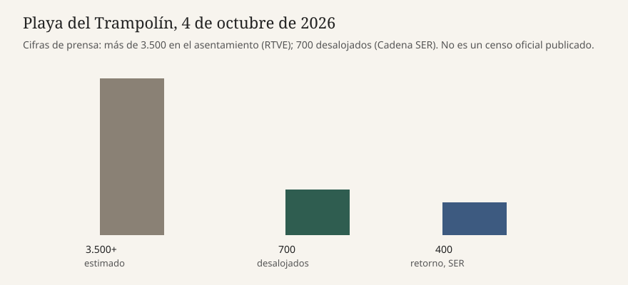

Ceuta · policía · 4 de octubre de 2026
La Policía empezó a levantar parte del asentamiento de la playa del Trampolín

Lo que las redacciones coinciden en contar
El domingo 4 de octubre de 2026 la Policía Nacional empezó un desalojo parcial del asentamiento de la playa del Trampolín, en Ceuta. RTVE, con agencias, sitúa el dispositivo a primera hora, con más de 30 furgones, dos blindados medios sobre ruedas (BMR) y un VAMTAC de las Unidades de Intervención Policial. La Jefatura Superior de Ceuta, citada por RTVE, habla de una primera fase sobre un asentamiento donde se estima que viven más de 3.500 personas. Cadena SER, con fuentes del operativo, cifra en unos 700 los desalojados durante la jornada y dice que al menos 400 fueron llevados en autobús al Tarajal para un retorno voluntario a Marruecos.
Las tres piezas coinciden en el límite material: no hay plazas de acogida para trasladar a todo el asentamiento de una vez. Por eso la operación es parcial. RTVE describe el traslado en autobús hasta el CATE para un triaje de quien lo acepte. El tramo prioritario es el más cercano a la planta desalinizadora. La Consejería de Medio Ambiente de la ciudad, según la SER, ha acordado con el ministerio del ramo proteger la instalación, limpiar el entorno y perímetralo para que no vuelvan las tiendas. Infobae añade que Sanidad había detectado E. coli y enterococos en el agua de la playa, y que el objetivo comunicado es dejar el espacio despejado antes del 15 de octubre.
Qué es cita y qué es cifra de fuente policial
La cifra de 3.500 es una estimación atribuida a la jefatura, no un censo publicado con metodología. La de 700 desalojados y la de 400 retornos salen de fuentes del operativo consultadas por la SER, no de un parte escrito enlazado en estas páginas. Pueden ser compatibles con un dispositivo real y aun así moverse cuando haya un recuento de filiación. Infobae habla de más de 30 furgones, tres vehículos blindados y drones. RTVE detalla dos BMR y un VAMTAC. La diferencia de un vehículo no cambia el hecho del despliegue; sí impide tratar el inventario como una sola tabla oficial.
El retorno “voluntario” es la palabra de las fuentes policiales. No es, en estas piezas, un acta firmada persona por persona ni una resolución de expulsión individual. Quien no acepta el retorno entra, según RTVE, en la vía del CATE y el triaje. Eso deja abiertas las preguntas de asilo, de minoría de edad y de plaza disponible. Ninguna de las tres piezas publica cuántas personas quedaron en la playa al cerrar el domingo.
El mecanismo que el lector necesita
Ceuta es territorio español en el norte de África, con una frontera terrestre en El Tarajal. Desde la entrada masiva del verano, varias playas han servido de campamento porque los dispositivos de acogida no absorbieron a todas las personas. A principios de semana las autoridades ya habían reubicado a quienes estaban en la playa de Benítez, con la misma oferta de conducción voluntaria a la frontera. El Trampolín repite el patrón: un espacio público junto a una infraestructura crítica, aquí la desalinizadora, y una operación por fases limitada por las camas.
Un desalojo policial no crea plazas. Si el CATE y los recursos de acogida cubren solo una fracción, el resto del asentamiento permanece o se desplaza a otro punto de la ciudad. Por eso la SER y RTVE insisten en que el domingo es una primera fase. El blindaje y la UIP son prevención de disturbios, no una medición de violencia ocurrida. RTVE no describe incidentes graves en el arranque. Infobae dice que, por el momento, no se habían producido. Eso es un parte de la mañana, no un cierre de la operación.
La contaminación del agua, si Sanidad la ha medido, es un hecho sanitario independiente del estatuto migratorio. Bañarse o cocinar con agua con E. coli es un riesgo para quien vive en la arena. También es un argumento de la administración para recuperar la playa. Las dos lecturas pueden ser ciertas a la vez. No convierten el desalojo en una solución de alojamiento.
Lo que esta pieza no es
No es un censo de las personas que entraron en julio. No es una orden judicial reproducida. No es una cifra única de asistentes a una marcha. La fotografía es la playa en mayo de 2025, antes de este operativo, y no muestra a los ocupantes del domingo.

Artículos fuente y puntuaciones
T baja en Infobae porque el inventario de blindados no coincide del todo con RTVE y porque el plazo del 15 de octubre no está en el parte de la SER. C baja cuando el retorno voluntario o el censo de 3.500 se leen como hecho cerrado sin enlace al parte. N refleja adjetivos de crisis más que una desviación de las cifras.